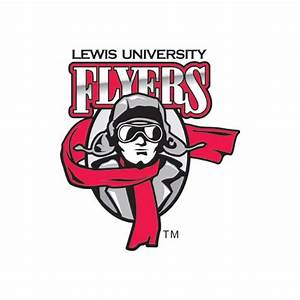

Software Engineering – 44000 ~ Syllabus: Fall Semester 2020
I. Instructor Information Instructor’s name: Eric Pogue
Lewis office location: AS-132-A
Office hours: MWF 1-2pm CT by appointment
Appointments: Appointments can be requested via email
Lewis Phone Number: 563-209-7280 (mobile)
Lewis email address: epogue@lewisu.edu
II. Course Information
Course: Software Engineering (CPSC-44000-LT1)
Course Credit Hours: 3
Course description:
Methods, strategies, and tools for implementing software systems, particularly as part
of a development team. Topics include the software development life cycle, Unified
Modeling Language, software testing techniques, software security, open-source
development, requirements gathering and documentation, maintenance, and basic
software project management.
Prerequisites: CPSC-24500 Object-Oriented Programming
Course meeting times: MWF 12-12:50am CT from August 31 through December 12th
Meeting location: AS 104A
Course final: Monday, December 14th from 1:30 to 3:30pm CT
III. University Mission Statement
Lewis University, guided by its Catholic and Lasallian heritage, provides to a diverse
student population programs for a liberal and professional education grounded in the
interaction of knowledge and fidelity in the search for truth.
Lewis promotes the development of the complete person through the pursuit of wisdom
and justice. Fundamental to its Mission is a spirit of association, which fosters
community in all teaching, learning and service.
How this course connects to the University Mission:
This course will allow us to extend our knowledge in software development, provide us
the foundation for lifelong learning in this domain, and provide us the opportunity to
assist each other on our learning journey.